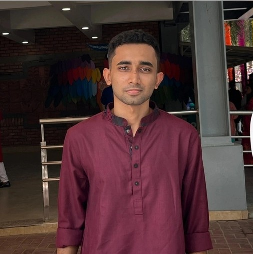

PRESENT
Bachelor of Science in Computer Science & Engineering
American International University-Bangladesh (AIUB)
9th semester (running) · CGPA: 3.27
I'm a CSE student at American International University-Bangladesh, interested in full-stack development, thoughtful user experiences, and solving real-world problems with software.

01 / ABOUT
I enjoy turning ideas into practical, well-structured applications.
I'm currently pursuing a Bachelor of Science in Computer Science and Engineering at AIUB. My experience so far includes building web applications, working with databases, and developing a C# desktop-style application as a university project.
I like learning by building. I'm continuing to strengthen my development fundamentals, collaborate on projects, and explore how software can make everyday tasks simpler.
02 / EDUCATION
American International University-Bangladesh (AIUB)
9th semester (running) · CGPA: 3.27
Chuadanga Govt. College
GPA: 5.00
Victoria Jubilee Govt. High School
GPA: 5.00
03 / SKILLS
Technologies and strengths I've used in coursework and personal projects.
04 / SELECTED WORK
A selection of university and independent work. More details and source links can be added as each project is published.
Built and deployed a multi-user habit-tracking web app with authentication, a PostgreSQL database, dashboard charts, streak tracking, and progress rings.
A platform in development where startups can seek funding and freelancers can bid on projects, supported by role-based dashboards.
Developed a C# university project covering the application's user interface, business logic, and data management flow.
05 / BEYOND THE CLASSROOM
Professional Certificate
Completed the Meta Front-End Developer Professional Certificate.
Participant
Attended two AI hackathons and explored collaborative, challenge-based problem solving.
Bangla Native English Fluent
06 / CONTACT
I'm interested in meaningful projects, collaboration, and opportunities to grow as a developer.
Say hello ↗